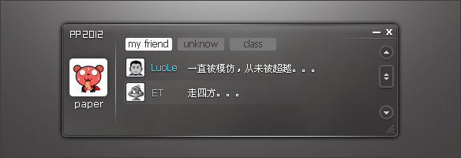
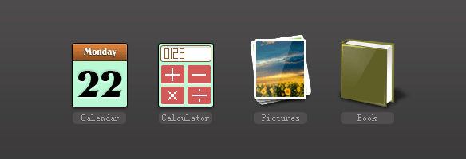
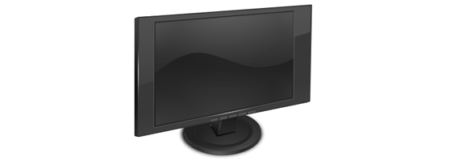
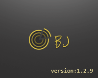
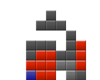
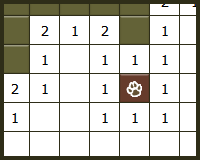

-

PS软件我还是很喜欢的，
-
没事就喜欢设计一些东东~~~
-

它也是我生活的一部分，
-

我喜欢的东西，我就会一直坚持下去，希望你和我一样。
-

从2009年10月份开始的1.0版本，到现在的1.2.9。中间经过了很多的版本测试，目前1.2.9还算稳定。 当然，测试工作还得继续，功能还得强大与实用结合，也许工作中用处较少，但对我来说也是一种锻炼。
-
-
经常练习算法，可以防止生手，这样对于程序员来说是有百利而无一害啊~~~
想了解更多？点击这里可以就可以了。 -

-

这个web简历，我尽我最大的努力来展现。我相信，这“封”web简历也会是一个不错的作品。
当然，这里也附带了简历所需要的信息，点击这里访问。
作为一个从事网络行业的前端工程师，通过web简历可以充分的发挥我的设计才能，也可以充分发挥我的代码能力， 最重要的是可以直接表达我的想法和我的性格。
虽然我从事这个行业的时间不长，与很多大虾们比起来还是很有距离，但是我知道，大虾们也是从菜鸟开始的，就是说从菜鸟变为大虾的过程是最重要的。 只要你坚持，就一定可以有进步，有进步就可以一步一步的成为大虾！
机会，对于每个人来说，都是可遇而不可求的。在学校读书的时候，我们就知道，机会是给有准备的人的。我始终是在创造机会，给自己机会。
对于生活我还是很乐观的，能够从事自己喜欢的工作，真是人生一大幸事！